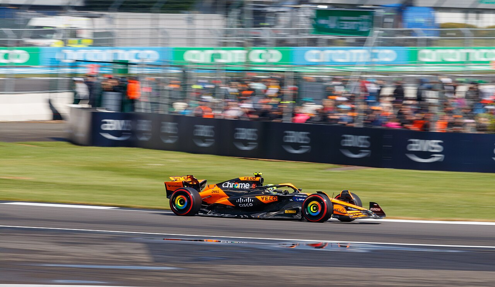
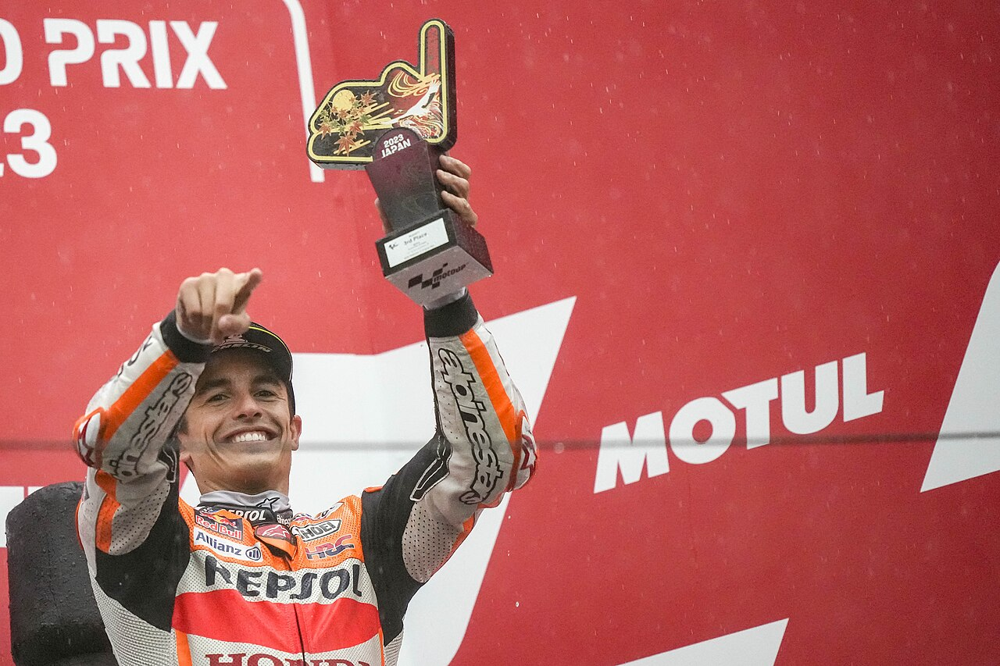

Photo © Jen Ross / Wikimedia Commons source · Creative Commons Attribution 2.0 Generic (CC BY 2.0) · Wikimedia 1280px thumbnail, proportionally resized; no cropping or other edits.
Drivers' Championship
Standings hidden — they'd give away the latest Formula 1 result.
Tick the latest weekend’s watched box above to reveal.
| Pos | Driver | Team | Pts |
|---|
Standings updated 5 October 2026 from the official driver table, team table and round-16 final classification. Driver and constructor totals both equal 1,796 points.
Constructors' Championship
| Pos | Team | Pts |
|---|
Who can still win it?
Title maths hidden — it gives the latest Formula 1 result away.
Tick the latest weekend’s watched box above to reveal.
| Driver | Pts | Max poss. | Alive? | Model estimate |
|---|
Constructors' model estimate
| Team | Pts | Max poss. | Alive? | Chance |
|---|
Race by race — podiums, gaps & fastest laps
Remaining 2026 calendar
| Rd | Grand Prix | Circuit | Date |
|---|
S= sprint weekend. Calendar checked against the official 2026 schedule on 5 October. Dates are local to the event; viewing times above use Brisbane AEST. All listed rounds are counted in the title calculations. Check the official F1 calendar for changes.
Paddock news
News checked: 5 October 2026. Stories stay hidden until the latest weekend is marked watched. Each summary links to its source; publication dates are shown below.

Photo © Box Repsol / Wikimedia Commons source · Creative Commons Attribution 2.0 Generic (CC BY 2.0) · Wikimedia 1280px thumbnail, proportionally resized; no cropping or other edits.
Riders' Championship
Standings hidden — they'd give away the latest MotoGP result.
Tick the latest weekend’s watched box above to reveal.
| Pos | Rider | Team | Pts |
|---|
Standings updated 5 October 2026 from MotoGP’s official Japanese GP classification and results service. GP and Sprint points total 3,023; substitutes and wildcards, including zero-point entries, are shown.
Who can still win it?
Title maths hidden — it gives the latest MotoGP result away.
Tick the latest weekend’s watched box above to reveal.
| Rider | Pts | Max poss. | Alive? | Model estimate |
|---|
Round by round — podiums, gaps & fastest laps
Remaining 2026 calendar
| Rd | Grand Prix | Circuit | Date |
|---|
Every round includes a Saturday Sprint. Indonesian session times are provisional pending a separately indexed official timetable. Calendar checked against the official 2026 schedule on 5 October. Dates are local to the event; viewing times above use Brisbane AEST. All listed rounds are counted in the title calculations. Check the official MotoGP calendar for changes.
Paddock news
News checked: 5 October 2026. Stories stay hidden until the latest weekend is marked watched. Each summary links to its source; publication dates are shown below.